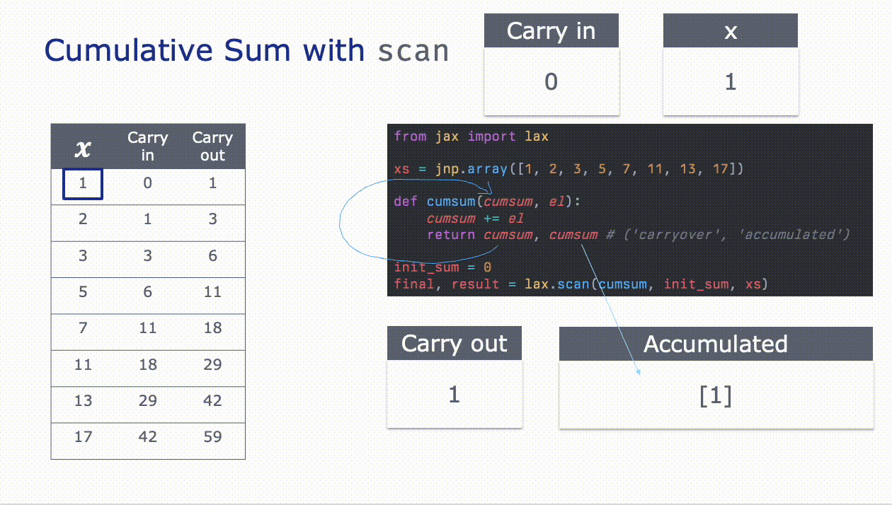

Learning scan with jax and numpyro
Learning scan - it’s all over the numpyro time series examples so if I want to implement time series in numpyro from scratch, I’ll need to better understand it.
In the context of time series models, scan is helpful because it allows us to iterate over sequences (without a cumbersome for loop) while maintaining state across each iteration.
Elements of a scan
First, let’s break down an example scan function into its’ components:

Trivial Example - Cumulative Sum
We’ll start with the cumsum example from From The Differential Programming Tutorial - Loopy Carry, by Eric Ma. We can implement a cumsum with a for loop like:
from jax import random
import jax.numpy as jnp
# xs
xs = jnp.array([1, 2, 3, 5, 7, 11, 13, 17])
result = []
cumsum = 0
for el in xs:
cumsum += el
result.append(cumsum)
jnp.array(result)Array([ 1, 3, 6, 11, 18, 29, 42, 59], dtype=int32)Now, instead of a loop, we rewrite it with jax.lax.scan:
from jax import lax
def cumsum(cumsum, el):
"""
Parameters
----------
cumsum
The result from the previous loop, aka the 'carried over' result
el
The current element in the sequence in `xs`
"""
cumsum += el
return cumsum, cumsum # ('carryover', 'accumulated')
init_sum = 0
final, result = lax.scan(cumsum, init_sum, xs)
print(final)
print(result)59
[ 1 3 6 11 18 29 42 59]We see that lax.scan returned two things:
- The first item is the latest value of the carried value
cumsum - The second item being returned is an array where each iteration appended the latest value of
cumsumto the end.
To make it a little more concrete, here’s a GIF that steps through each iteration:

See that the scanned function returns two items: the first goes back into the loop while the second is appended to an array that acts as a ‘running tally’ of values from each iteration. You can also pass None here if you don’t need it.
Trivial Example 2: A little more of the scan function with compounding interest
The first two parameters in the input function can have arbitrary names but their order matters. The first item is the ‘carried over value’, aka the carry. The second item is the current element in the xs input array.
Similarly the input function must have two outputs. The first output becomes the new ‘carried over value’ that will feed back into the input function, while the second output gets appended to an output jax array.
Let’s have a concrete example in which we calculate compounded interest for a $100 investment with a 4% interest rate:
# Define the input function to apply at each time step
def interest_growth(value, x):
value = value * 1.04
return value, value # ('carried over value', 'accumulated array')
# Define the initial state and input sequence
init_state = 100.0
T = jnp.array([1, 2, 3, 4, 5])
T = jnp.arange(1, 30)
# Apply the scan function
final_state, results = lax.scan(f=interest_growth, init=init_state, xs=T)
print(final_state)
print(results)311.8648
[104. 108.159996 112.48639 116.98584 121.66527 126.531876
131.59314 136.85686 142.33113 148.02437 153.94534 160.10315
166.50726 173.16754 180.09424 187.298 194.78992 202.58151
210.68477 219.11215 227.87663 236.99168 246.47134 256.3302
266.5834 277.24673 288.33658 299.87003 311.8648 ]
And we see the effect of the interest compounding over time.
Trivial Example 3: scan in numpyro to sample from a distribution
And what I’m really interested in is learning scan in the context of doing time series in numpyro.
numpyro has it’s own (experimental) implementation of scan which allows us to iteratively sample from numpyro primitives like numpyro.distributions.
Here’s a simple example of a random walk:
\[ y_{t+1} = y_t + \epsilon, \quad \epsilon \sim \mathcal{N}(0,1) \]
Or, equivalently:
\[ \begin{aligned} y_t &= \mu_t\\ \mu_{t+1} &= \mu_t + \epsilon_\mu, \quad \epsilon_\mu \sim \mathcal{N}(0, 1)\\ \end{aligned} \]
We need to use scan because each subsequent value of \(\mu_{t+1}\) depends on its previous value \(\mu_{t}\).
To do this within a scan we’ll also need to introduce an effect handler: numpyro.handlers.seed and run the scan function within that context.
# Import libraries
import numpyro
from numpyro.contrib.control_flow import scan
import numpyro.distributions as dist
import matplotlib.pyplot as plt
# Define our random walk function as an input into `scan`
def random_walk(value, x):
value = numpyro.sample('x', dist.Normal(value, 1.))
# Which is the same as if we were very explicit:
# value = value + numpyro.sample('x', dist.Normal(0, 1.))
return value, value
init_0 = 0
T = jnp.arange(100)
# Need the `seed` effect handler in a context manager because of
# the need for a PRNG key within `numpyro.sample`
with numpyro.handlers.seed(rng_seed=42):
final_location, locations = scan(random_walk, init=init_0, xs=T)
plt.plot(T, locations)
plt.title('Simulated Gaussian Random Walk');
Aside: What if I didn’t use numpyro.handlers.seed there?
Note the addition of numpyro.handlers.seed. This is required due to how numpyro requires an explicit PRNG key when you sample from a distribution, so this seed effect handler will automatically do the splits on the key within each loop of the scan function.
Otherwise, if you set up an explicit key with scan this is what you’d get:
# What happens if you don't use `numpyro.handlers.seed`?
prng_key = random.PRNGKey(42)
def random_walk_nokey(value, x):
# Being really explicit here
value = value + numpyro.sample('x', dist.Normal(0, 1.), rng_key=prng_key)
return value, value
init_0 = 0
n_steps = 100
state, final_result = scan(random_walk_nokey, init=init_0, xs=jnp.arange(n_steps))
plt.plot(jnp.arange(n_steps), final_result);
So that’s why you need to use the handler!